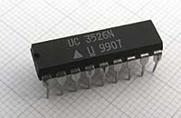
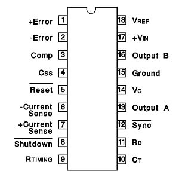
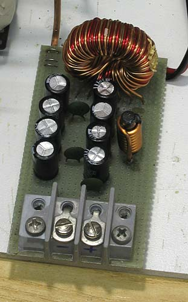
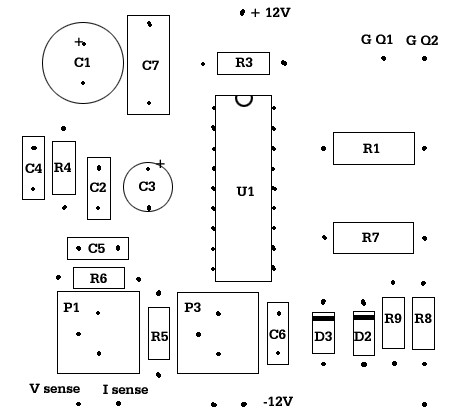
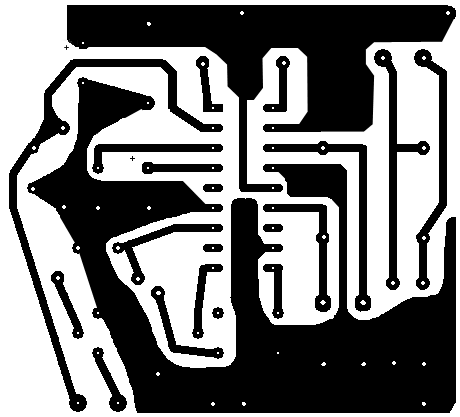
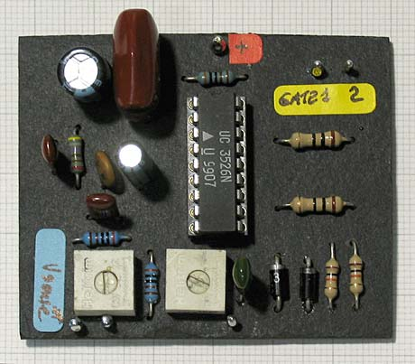
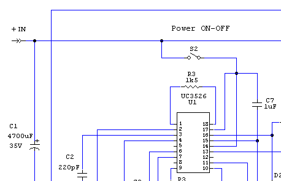

Alimentatori
SWITCHING POWER SUPPLY PUSH-PULL
DC-DC in: 9-20V out: 5-18V max 20A "Fai da te" di R.Chirio
Indice della pagina

Febbraio 2007
Questo alimentatore DC-DC serve per innalzare la tensione di batteria 12v e stabilizzare l'uscita compensando la caduta di tensione batteria durante la scarica. Potendo raggiungere 15V-16V è indicato per ottenere le massime prestazioni dagli apparati radiotrasmittenti.
La regolazione da 5 a 18Volt soddisfà le richieste di molti carichi elettronici.
L'aggiunta di un circuito rete con trasformatore di ingresso 220V/14V 250VA, ponte raddrizzante e condensatori di filtro, espande le possibilità di impiego.
La tensione di ingresso può essere tra 9,0 e 18V e la tensione in uscita è regolabile da 5-18,0V Quando l'ingresso è maggiore di 12,0V la massima corrente in uscita può raggiungere i 20A (con ventilatore). La tensione in uscita è regolabile tramite potenziometro da un valore minimo di 5 V fino a un massimo di 18V.
Non è presente una regolazione continua di corrente sull'uscita, (prestare attenzione) c'è solo la taratura della massima corrente che attraversa il MosFet.
Le migliori prestazioni con batteria si ottengono con 12-14V. Sotto 11,00Volt funziona ancora bene, ma la massima corrente non è raggiungibile.

E' stato scelto questo regolatore in quanto inizia a funzionare a 8V. Uscita driver simmetrico per comandare BJT e Mos in configurazione Push-Pull.
Complete funzioni di controllo tensione e corrente.
La frequenza di lavoro, viene scelta 30 kHz per non avere grandi perdite con la ferrite N27. E' determinata da (R5+P3) e C6.

Questo alimentatore DC-DC può funzionare senza ventilatore con un'uscita fino ai 5A oltre i 70°C interviene l'interruttore termico Klixon (da fissare sul componente che scalda di più) che fa partire il ventilatore per raffreddare la parte di potenza composta dai Mosfet, diodi, trasformatore, induttori e condensatori elettrolitici.
Roberto Chirio è a disposizione per consulenze nel progettare e realizzare Switching Power Supply
Contattare: info@chirio.com
SCHEMA ELETTRICO
{kind=link}
|
Materiale |
Dove |
|
|---|---|---|
|
IC1 |
● 1 integrato UC3526 UNITRODE (Texas Instrument) |
negozio elettronica |
|
● morsettiera ingresso e uscita (tipo da 30A) |
negozio elettronica |
|
|
● 1 basetta mille fori vetronite con piazzole stagnate |
negozio elettronica |
|
|
S1 |
● 1 termico Klixon da 60-70° normalmente aperto |
negozio elettronica |
|
R1 |
● 1 resistenza 10 ohm 1/4W |
negozio elettronica |
|
R2 |
● 2 resistenza 0,04 ohm 5-10W 5% filo (parallelo) |
negozio elettronica |
|
R3 |
● 1 resistenza 1K5 ohm 1/4W 1% strato metallico |
negozio elettronica |
|
R4 |
● 1 resistenza 4k7 ohm 1/4W 1% strato metallico (vedi note) |
negozio elettronica |
|
R5 |
● 1 resistenza 2k5K ohm 1/4W 1% strato metallico |
negozio elettronica |
|
R6 |
● 1 resistenza 1K5 ohm 1/4W 1% strato metallico |
negozio elettronica |
|
R7 |
● 1 resistenza 10 ohm 1/4W 5% |
negozio elettronica |
|
R8 |
● 1 resistenza 10K ohm 1/4W 5% |
negozio elettronica |
|
R9 |
● 1 resistenza 10K ohm 1/4W 5% |
negozio elettronica |
|
R11 |
● 1 resistenza 12 ohm 2W 5% |
negozio elettronica |
|
R12 |
● 1 resistenza 330 ohm 2W 5% |
negozio elettronica |
|
C1 |
● 1 condensatore elettrolitico 4700uF 35V per switching |
negozio elettronica |
|
C2 |
● 1 condensatore ceramico 220pF 100V |
negozio elettronica |
|
C3 |
● 1 condensatore elettrolitico 1uF 35V |
negozio elettronica |
|
C4 |
● 1 condensatore ceramico 470pF 100V |
negozio elettronica |
|
C5 |
● 1 condensatore ceramico 470pF 100V |
negozio elettronica |
|
C6 |
● 1 condensatore poliestere 4,7nF 100V |
negozio elettronica |
|
C7 |
● 1 condensatore policarbonato 1uF 63V |
negozio elettronica |
|
C8 |
● 6 condensatore elettrolitico 1000uF 25V per switching |
negozio elettronica |
|
C9 |
● 2 condensatore elettrolitico 1000uF 25V per switching |
negozio elettronica |
|
C10 |
● 1 condensatore policarbonato 1uF 63V |
negozio elettronica |
|
C11 |
● 1 condensatore ceramico .1uF 63V |
negozio elettronica |
|
C12 |
● 1 condensatore ceramico .1uF 63V |
negozio elettronica |
|
C13 |
● 1 condensatore ceramico .1uF 63V |
negozio elettronica |
|
C14 |
● 1 condensatore policarbonato 10nF 63V |
negozio elettronica |
|
D1 |
● 1 diodo doppio 200V 60A oppure diodo tipo Schottky da 60 A 50V (nota) |
negozio elettronica |
|
D2/D3 |
● 1 diodo Schottky 1N5819 |
negozio elettronica |
|
Q1/Q2 |
● 6 Mos-Fet tipo RFP50N06 To220 (vedi note) |
negozio elettronica |
|
T1 |
● Trasformatore con nucleo E55 Siemens da avvolgere (vedi note) |
negozio elettronica |
|
L1 |
● 1 induttore 7,8uH (vedi note) |
?? |
|
L2 |
● 1 induttore 1,7uH (vedi note) |
?? |
|
P1 |
● 1 trimmer cermet 1Kohm |
negozio elettronica |
|
P2 |
● 1 potenziometro cermet 10 giri 22Kohm (vedi note) |
negozio elettronica |
|
P3 |
● 1 trimmer cermet 22Kohm |
negozio elettronica |
|
FAN |
● 1 ventilatore 12V tipo computer 12cm |
negozio elettronica |
|
Is1 |
● 1 amperometro da pannello 20A cc |
negozio elettronica |
|
Vs1 |
● 1 voltmetro da pannello 20V cc |
negozio elettronica |
|
● 1 contenitore alluminio |
negozio elettronica |
|
|
● 3 radiatore alluminio alettato |
negozio elettronica |
|
Realizzazione
La realizzazione dello Switching Power Supply comporta avere delle conoscenze di elettronica, è necessaria un'attrezzatura ed esperienza nei montaggi elettronici.
Non si risponde per danni a cose e persone e per un uso improprio della realizzazione.
{kind=link}
Sulla sinistra il radiatore dei diodi, al centro i tre MosFet in parallelo, l'aletta di raffreddamento è sufficiente solo se con ventilazione forzata, altrimenti montare su radiatore di maggiori dimensioni.
{kind=link}
Il flusso d'aria del ventilatore 12v deve essere posizionato sui componenti che scaldano di più: i diodi veloci sull'uscita, condensatori e bobine di filtro, trasformatore e MosFet di potenza.
Nella versione finale dentro un mobile metallico, è necessario creare un canale di flusso aria che possa raffreddare bene tutti i componenti di potenza.
R4 P2 regolazione tensione uscita
La minima tensione ottenibile in uscita è uguale alla tensione di riferimento presente sul piedino 18 del del 3526 pari a 5,00Volt, in questo caso il valore di P2 è uguale a 0 ohm. La tensione massima è data dal partitore formato da P2 su R4. Per ottenere una escursione completa del P2 da 5 a 18V, è consigliabile montare al posto della R4 un trimmer 22 giri cermet da 5 o 10K ohm così da fare una preregolazione di fondo corsa del P2. A sistema funzionante portare il valore di P2 a fondo corsa e poi regolare la R4 per avere o 16 o 18V fondo scala, cosi al minimo avremo sempre 5V in uscita e tutta l'escursione di tensione sul valore lineare del P2. Se si vuole avere una tensione in uscita con escursione da 0V a 18V, è necessario un voltage reference esterno al 3526 con un valore di 0,6 inferiore al negativo.
Transistor Mos-Fet Q1/Q2
In questo caso ho usato i MosFet di Potenza tipo RFP50N06, vengono montati tre in parallelo per ogni lato simmetrico.
Vanno bene un po' con tutti i Mos-Fet di potenza con caratteristiche di 60V 50A o superiori. Vanno montati sul dissipatore usando grasso conduttivo per migliorare il trasferimento termico. Essendo tutti e tre in parallelo li monterei senza isolante verso il dissipatore, per poi usare una vite filettata per il collegamento comune di Drain direttamente sul dissipatore. Tutto il dissipatore deve essere fissato con boccole isolanti verso il telaio del contenitore. I due dissipatori non devono toccarsi tra di loro.
Diodi di potenza D1
Il diodo D1 può essere del tipo doppio Schottky da 60A 50V, purtroppo la tensione di lavoro è molto vicina a quella di Breakdown in quanto gli spikes sull'uscita per un semiponte sono nell'ordine dei 70-90V. Chi sa dimensionare bene gli snubber può tentare di ridurre gli spikes con uno snubber dedicato su ogni diodo. E' chiaro che usando lo Schottky si ottiene un migliore rendimento e temperature più basse.
Eventualmente si possono adottare 4 diodi Schottky da 60 A 50V in configurazione ponte intero e mettere in parallelo i due avvolgimenti in uscita.(Con la stessa fase)
Nel caso contrario si montano dei diodi fast da 200V 20/30A (da come si può vedere nella foto).
Trasformatore T1
Il nucleo di ferrite è un Siemens E55 materiale tipo N27. E' necessario il rocchetto dedicato per facilitare l'avvolgimento.
L'avvolgimento primario è composto da 2+2 spire realizzate con 12+12 fili rame smaltato da 0,75mm. L'avvolgimento deve essere realizzato per ultimo sopra il secondario. I 24 fili vanno avvolti tutti assieme, per garantire la stessa lunghezza (uguale induttanza e resistenza per ogni avvolgimento simmetrico). Bisogna preparare i 24 spezzoni lunghi 60/70cm, prima di iniziare a avvolgere.
L'avvolgimento secondario è composto da 4+4 spire composte da 8 fili rame smaltato da 0,75mm. L'avvolgimento deve essere realizzato per primo sotto il primario. I 16 fili vanno avvolti tutti assieme, per garantire la stessa lunghezza (uguale induttanza e resistenza). Bisogna preparare i 16 spezzoni lunghi 100/110cm, prima di iniziare a avvolgere.
Tra gli avvolgimenti isolare con 2 giri di nastro Mylar o materiale isolante per trasformatori.
Finito di avvolgere, le spire vanno fissate con alcuni giri di nastro Mylar o Nomex per avvolgimenti. Eventuale tubetto termorestringente per proteggere il passaggio di uscita.
Il trasformatore finito assemblato con la ferrite dovrebbe essere impregnato sotto vuoto con la vernice per trasformatori, non tanto per problemi di isolamento, quanto per ridurre il rumore ultrasonico generato durante il funzionamento.
La separazione dei due avvolgimenti primari e secondari va fatta dopo avere tolto lo smalto per 10-15mm dalla parte terminale del filo rame, usando poi il tester per individuare inizio-fine avvolgimento si separano gli 8 + 8 fili per formare i due avvolgimenti.
I terminali ottenuti vanno saldati assieme a un capicorda di rame ad occhiello.
Induttore L1

Viene usato l'induttore di filtro recuperato da un alimentatore ATX da 500W, si usa la sezione del 5V che è dimensionata per sopportare oltre 30A (ventilato).
Gli altri avvolgimenti con filo di diametro minore non vengono usati e vanno isolati tra di loro. L'avvolgimento composto da tre fili di 1,2mm deve sopportare tutta la corrente in uscita. I tre fili vanno collegati in parallelo tra di loro sull'ingresso e sull'uscita.
Sono 8/10 spire da 3 x 1,2mm su un nucleo toroidale da 35mm di diam.
Induttore L2
Anche in questo caso viene usato il secondo induttore di filtro di un alimentatore ATX da 500W, sono poche spire di grosso diametro, avvolte su ferrite. Deve sopportare tutta la corrente in uscita. (max 20A)
Sono 8 spire filo 2mm su una ferrite da 10mm.
Circuito Stampato Driver regolatore.
Questo è il circuito stampato della sezione driver, è adatto per la realizzazione completa con trasformatore da rete, si nota un C1 di piccole dimensioni, in questo caso è sufficiente un 100uF 35V, in quanto a monte ci sono già 47000uF.

Disposizione componenti.

Vista piste dal lato componenti, da capovolgere per la realizzazione.

Vista componenti montati.
Taratura
Collegare un alimentatore variabile all'ingresso e salire di tensione fino a 12V, dovremmo avere il circuito funzionante, regolare il P2 per fare variare la tensione in uscita. Se avviene una buona escursione da 5 fino 18V si può collegare un carico di almeno 5A e provare a rifare l'escursione di tensione uscita che deve arrivare fino a 18V. Mancanze di tensione in basso e in alto possono dipendere dal valore del potenziometro stesso e dalla
Il trimmer P3 serve a tarare la frequenza a 30 kHz, togliere la R1 e R7 sul gate dei Mos e alimentare solo il UC3526, dovremmo avere una forma quadra al 50% simmetrica, regolare la frequenza a 30 kHz (+/-10%)
Il trimmer P1 serve a tarare la soglia di limitazione corrente massima, va regolato a carico per non fare salire la corrente in uscita oltre i 20A, quando l'ingresso è 11,0V.
Prova a massimo carico:
Per la prova a 16V 20A ci serve una resistenza da 16V/20A = 0,80 ohm 350W non facile da trovare.
Se non disponiamo di un carico elettronico variabile (vedi altre mie pagine), possiamo realizzare un buon carico con lampade auto 12V 55W.
Attenzione tutte le lampade alogene presentano da fredde una resistenza molto più bassa di quando sono accese, pertanto allo spunto assorbono anche 5 volte la corrente nominale.
Questo alimentatore è in grado di alimentare continuamente 4 anche 5 lampade in parallelo.
La tensione d'uscita deve essere regolata a vuoto a 12,5 Volt. L'unica accortezza è quella di accendere le lampade una dopo l'altra e non tutte assieme, questo per evitare la forte corrente di spunto che potrebbe fare intervenire il fusibile batteria.
Altro stratagemma per usare il carico lampade è quello di regolare la corrente con il trimmer al valore minimo e poi quando le lampade sono appena accese con pochi volt, portare la regolazione a un valore alto così che prenda il sopravento il controllo dell'uscita con la regolazione di tensione.
Leggere la tensione di uscita sul carico e verificare quanto è la caduta di tensione tra carico, vuoto. Valori di 0,5Volt sono accettabili. Cadute maggiori significano che i conduttori non sono di opportuna sezione e/o la sorgente in ingresso non è abbastanza potente e provoca caduta di tensione interna. Attenzione che i due fili di sensing che partono dal 3526 devono essere posizionati direttamente sulla morsettiera di uscita.
Connessione su batteria 12v
Quando è stato provato in laboratorio e tutto è OK, possiamo collegare l'alimentatore a una batteria da 12V, deve essere una batteria con una capacità minima di 63A/h:
E' necessario un fusibile da 30A in serie a uno dei cavi di batteria. Va benissimo un fuse tipo automobilistico molto più economico.
Cavi batteria devono essere da 10mmq e la loro lunghezza non superiore a 1,5m.
Anche i cavi in uscita devono essere da 10mmq e max 1,5m.
..
..
..

Modifica per Power ON/OFF
Questo evita di usare un interruttore generale da 30A direttamente sulla batteria, in quanto togliamo solo alimentazione al Driver UC3526. Il circuito di soft start evita di partire alla massima potenza.
Forme d'onda
Uscita UC3526 comando gate Mosfet, piedini 13 CH1 piedino 16 CH2
Parte di potenza non alimentata. VB 12V
Lettura frequenza e verifica simmetria.
{kind=link}
Tensione capi MosFet
Parte di potenza alimentata. VB 12V
Verifica comando dutycyle variabile, in questo caso controllo in corrente.
{kind=link}
Uscita UC3526 comando gate Mosfet, Q1 CH1 Q2 CH2
Parte di potenza alimentata. VB 12V
Verifica comando dutycyle variabile, in questo caso controllo in corrente.
{kind=link}
Tensione capi diodi D1, comando parzializzato.
Si nota una differenza di forma tra i due diodi, non sono così uguali tra di loro, è necessario uno snubber per ognuno con tarature diverse per ridurre gli spikes. Se avessi usato diodi Schottky sarebbero già out.
{kind=link}
Tensione capi diodi D1, comando a piena onda.
Si nota una differenza minore rispetto sopra.
{kind=link}
Gruppo ingresso 220V 300VA
{kind=link}
Schema del gruppo trasformatore 220V/14V necessario per fare funzionare da rete il Power Supply da 20A.
Sono necessari almeno 2000uF per ogni Ampere assorbito in uscita, questo per garantire un buon livellamento.
Ho usato 4 condensatori da 10000uF 35V in parallelo, va anche bene un condensatore da 47000uF da 35-50V più difficile da reperire.
Il trasformatore da 300VA sarebbe ideale del tipo toroidale con schermo tra primario e secondario. Lo schermo elettrostatico da collegare a massa è molto utile per ridurre le interferenze, provenienti dalla rete.
Il ponte raddrizzante deve essere montato su un dissipatore di generose dimensioni.
Nel caso di assorbimento corrente massima per tempi lunghi, tutto il gruppo deve avere la ventilazione forzata, ideale usufruire della stessa ventola dello Switching.
Non indispensabile, ma utile un filtro rete sull'ingresso ed eventualmente dei soppressori di transienti tra le fasi e verso massa, per ridurre i rischi di scariche presenti in rete.
I collegamenti dal ponte verso i condensatori e verso il carico vanno fatti con cavo da 6/10mmq ideale una piattina di rame da 10mm spessa 1mm, direttamente sui terminali dei condensatori elettrolitici.
Realizzazione finale dentro il mobile
continua....
ALIMENTATORE 12V USCITA 40+40V per CAR AUDIO AMPLIFIER 100+100Watt rms
{kind=link}
Maggio 2007.
Sempre usando la base di pilotaggio descritta sopra è facilmente modificabile lo stadio di uscita per avere una tensione maggiore.
In questo caso sono richiesti 40+40V con un assorbimento massimo di 5A, la potenza totale richiesta in uscita può raggiungere i 400W. Pertanto bisogna irrobustire il circuito di ingresso mettendo 5 Mosfet in parallelo per ogni ramo.
Anche il primario del trasformatore deve reggere maggiore corrente quindi metteremo 2+2 spire formate da 24+24 fili di rame smaltato diametro 0,75mm le terminazioni vanno unite su un capicorda di rame di opportuna dimensione.
I diodi del ponte devono essere del tipo super fast, non è possibile usare gli Schottky in quanto si fermano a 50V.
Lo stadio di uscita è doppio e speculare, si regola la tensione con R19 solo su un ramo, l'altro deve essere per forza
di uguale valore di tensione.
© Roberto Chirio: all rights reserved.